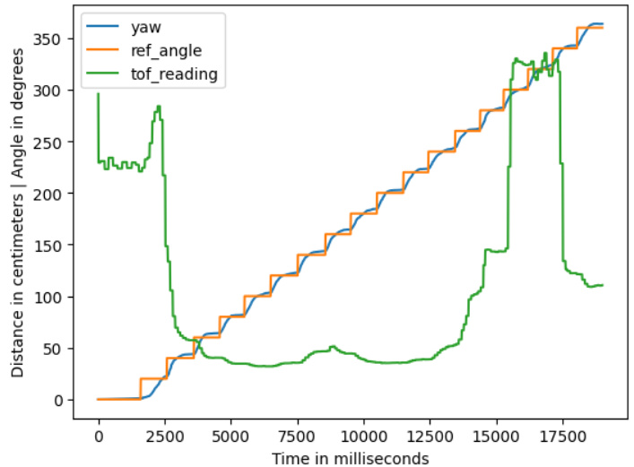
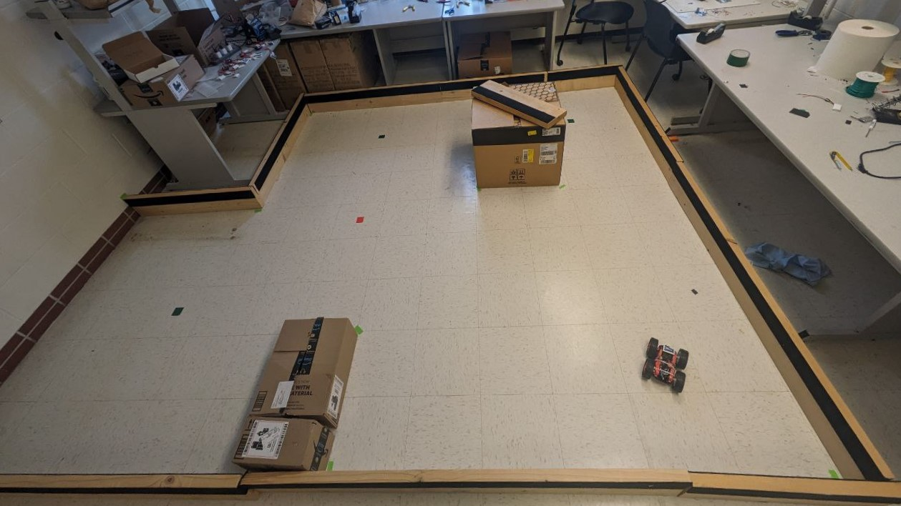
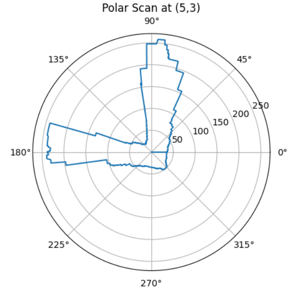
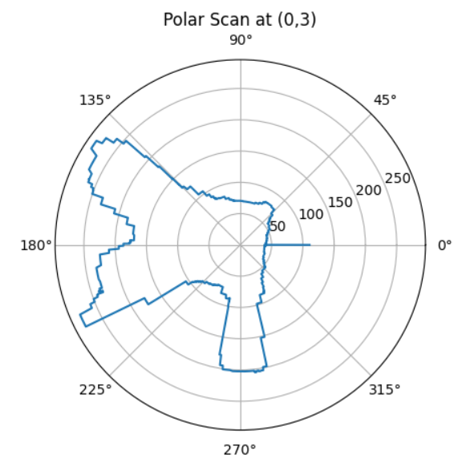
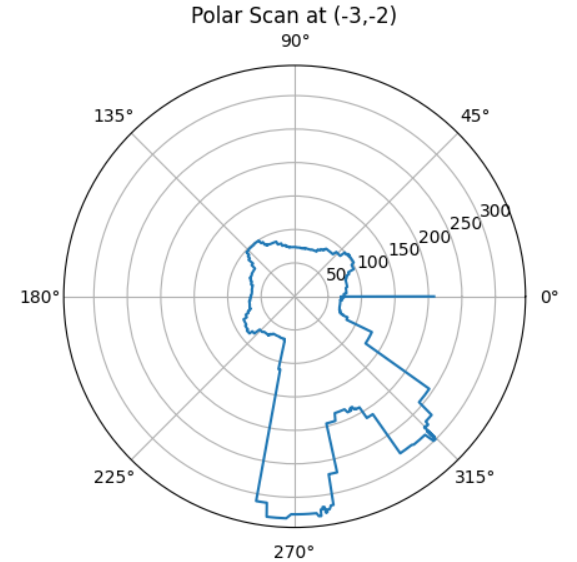
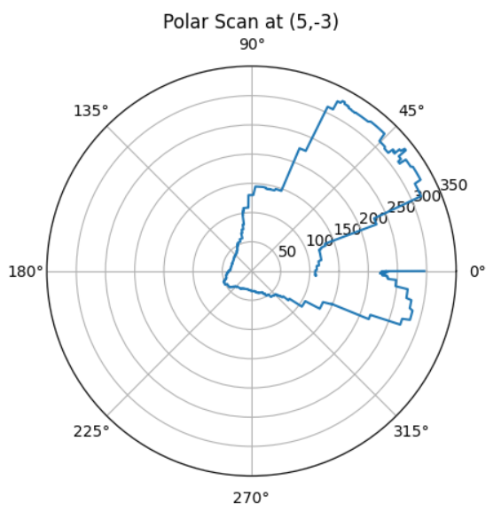

Objective
The aim of this lab is to create a map of a static room for use in future localization and navigation functionalities. To build the map, the robot is placed in several marked locations around the room and rotates around its axis to collect ToF data.
Lab Tasks
Robot Control
The previously developed PID orientation control is utilized in this lab to enable the robot to do on-axis turns in small, accurate increments. When the mapping functionality is activated, the robot rotates clockwise 18 times, recording ToF data each time. The rotation increment is 20 degrees, with a 1-second interval between rotations to ensure stable ToF readings.
Several new command cases have been added, as shown in the code block below.
In lab 6, the PID orientation control was already implemented in the main loop, enclosed within an if statement that checks a flag to determine whether to execute the PID orientation control. Now, another parallel if statement is added to the main function to handle operations other than PID control in this mapping task. This includes ToF data reading, PID set points adjusting, and data storage. The flags for both if statements are raised in the START_MAPPING command case, allowing the desired functionality to be achieved. The code for the main loop is as follows.
Initially, the plan for implementing this task was to write all the non-PID control operations in a command case directly as a while loop, which means the robot would stay in the handle_command() function until it completes a 360-degree rotation. However, having the operations in a while loop would prevent the robot from receiving other commands during the task. As operators controlling the robot, we want to maintain as smooth and immediate communication with the robot as possible. Therefore, the current method was chosen eventually over this approach.
The above video shows the robot performing (approximately) on-axis turns in small increments using orientation PID control. Each turn is 20 degrees, totaling 18 turns, which completes one full rotation before stopping.
The set point of the PID controller, the angle readings from the IMU sensor, and the corresponding ToF data are displayed in the figure below. It can be seen that there is a certain error in the yaw value compared to the set point, but it is acceptable (and this error may also be influenced by the drift of the IMU sensor itself).

Data Gathering
The room to be mapped is shown in the figure below. In this map, each square represents a single grid cell, and the highlighted square in red represents (0, 0). The other black ones indicate the locations where the robot collected data from, with coordinates at (0,3), (5,3), (5,-3), and (-3,-2), respectively.

The polar plots of the results are shown below.




Discussion & Conclusion